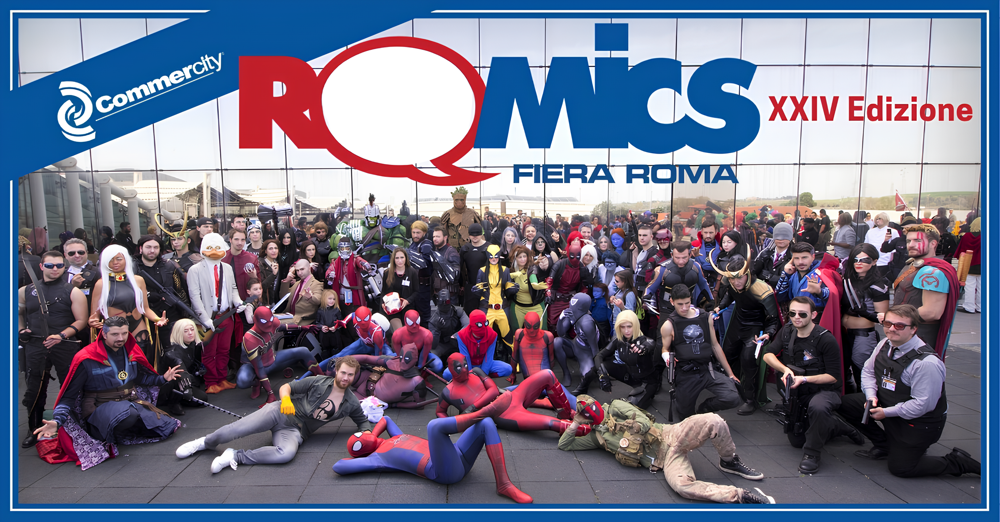

Saluti a tutti, compagni! Vista la delusione suscitatami da entrambe le mie scorse visite a Roma, ho
deciso che ci penserò io a migliorarla quest’anno deliziandovi della mia presenza dal 3 al 6 ottobre al
Romics 2024! Ebbene sì, sono molto felice di annunciarvi che troverete anche me quest’anno! Sarò
allo stand numero 69 del quarto padiglione a firmare libri. Inoltre, dalle 4
alle 6 mi metterò a rispondere alle vostre domande e dialogare assieme a voi. Ci incontriamo là!
Saluti dal conte Giacomo Leopardi.
Incontrami al Romics quest'anno